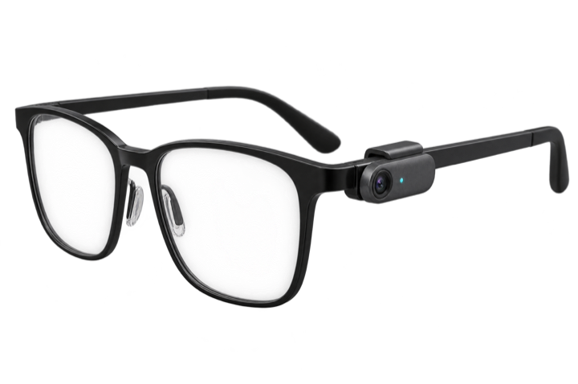

Hola, Rulo
Jueves 30 de octubre · Lente está en pausa
Te aviso cuando te pregunten y te doy una línea para decir.
Nada se transcribe hasta que toques. La luz del clip avisa a los demás.

Clip LenteConectado · 82 %PRÓXIMA REUNIÓN
Revisión de diseño12:30 · en 25 min · Lucía, Marcos
PENDIENTE
HOY
2reuniones
42 minescuchado
≈ US$0.31gasto
Asistir
DILO
Te aviso cuando te pregunten.
DILO
El lanzamiento queda
para el 14, con QA el lunes.
Te preguntó Ana: ¿cuándo salimos?
Solo grabar
Acciones por aprobarDel cierre de «Fecha de lanzamiento con QA»
Sin sugerencias ni llamadas a modelos. Al terminar tendrás notas y transcripción.